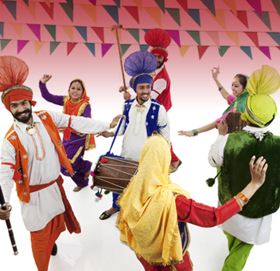

Lohri:
To celebrate a good harvest, the villagers around Dharamshala observe Lohri in the month of January. Cultural shows and traditional folk dance performances mark the celebrations of this agricultural festival.